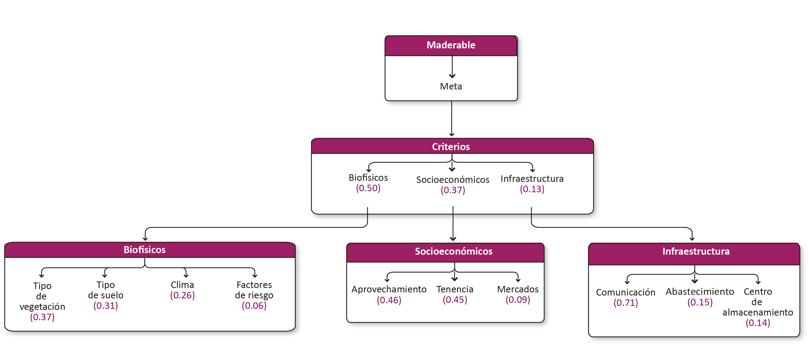

Forestal¶
Meta¶
Incorporar nuevas superficies y productores a la producción forestal maderable y no maderable, de tal manera que se represente una alternativa productiva y mejorar las capacidades técnicas y financieras de aprovechamiento de las áreas ya destinadas a la producción forestal maderable y no maderable.
Subsectores¶
Maderable¶
Especies con potencial de materias primas (madera en rollo, leña y leña para elaboración de carbón). Espacios del territorio para especies maderables con uso industrial.
Modelo AHP de la actividad maderable

Criterios¶
Biofísicos¶
| Criterio | Definición |
|---|---|
| Tipo de vegetación | Uso de suelo y vegetación (cubierta vegetal). |
| Edafología | Tipo de suelo. |
| Clima | Tipo de clima. |
| Factores de riesgo | Elementos del ambiente bioísico que impiden las actividades forestales maderables (zonas con plagas y especies invasoras, zonas con incidencia de incendios). |
Tipo de vegetación¶
Uso de suelo y vegetación (cubierta vegetal).
Insumos
| Capa | Cobertura |
|---|---|
| Fuente | Mapa de coberturas del suelo del estado de Yucatán CONAFOR |
| Año | 2016 |
| Campo | DES_SAMOF |
| Escala | Sin dato |
| Unidades | Adimensional |
| Capa | Uso del suelo y vegetación |
|---|---|
| Fuente | Conjunto de datos vectoriales de la carta de Uso del suelo y vegetación. Serie VI. Conjunto Nacional INEGI |
| Año | 2014 |
| Campo | descripcio |
| Escala | 1:250,000 |
| Unidades | Adimensional |
Edafología¶
Tipo de suelo.
Insumos
| Capa | Edafología |
|---|---|
| Fuente | Conjunto de datos vectoriales edafológico. Serie II (Continuo Nacional) INEGI |
| Año | 2014 |
| Campo | tipo_suelo |
| Escala | 1:250,000 |
| Unidades | Adimensional |
Clima¶
Tipo de clima.
Insumos
| Capa | Climas |
|---|---|
| Fuente | Climas CONAGUA |
| Año | 2001 |
| Campo | Clima_tipo |
| Escala | 1:1,000,000 |
| Unidades | Adimensional |
Factores de riesgo¶
Elementos del ambiente biofísico que impiden las actividades forestales maderables (zonas con plagas y especies invasoras, zonas con incidencia de incendios).
Insumos
Capa Riesgos para la actividad forestal (plaga) Fuente Riesgo estatal para Escarabajos Ambrosiales Exóticos SIVICOFF Año 2020 Escala Sin dato Unidades Adimensional
| Capa | Riesgos para la actividad forestal (incendios) |
|---|---|
| Fuente | Áreas prioritarias de protección contra incendios forestales SNIGF CONAFOR |
| Año | 2020 |
| Escala | Sin dato |
| Unidades | Adimensional |
| Capa | Riesgos para la actividad forestal (plaga) |
|---|---|
| Fuente | Riesgo estatal por Sinoxylon unidentatum SIVICOFF |
| Año | 2020 |
| Escala | Sin dato |
| Unidades | Adimensional |
Socioeconómicos¶
| Criterio | Definición |
|---|---|
| Aprovechamiento | Autorizaciones de aprovechamiento (activos e inactivos). |
| Mercados | Distancia a localidades con puntos de venta. |
| Tenencia | Tenencia de la tierra por zonas ejidales, no ejidales y tierras de uso común. |
Mercados¶
Distancia a localidades con puntos de venta.
Insumos
| Capa | Tamaño poblacional |
|---|---|
| Fuente | [1] Polígonos de localidades. Conjunto de datos vectoriales de información topográfica por Entidad Federativa Serie VI (localidad250_a) INEGI y [2] Datos de indicador. Censo de Población y Vivienda. Principales resultados por localidad (ITER) INEGI |
| Año | [1] 2019; [2] 2010 |
| Campo | [2] POBTOT |
| Escala | Localidad |
| Unidades | Número de habitantes |
Tenencia¶
Tenencia de la tierra por zonas ejidales, no ejidales y tierras de uso común.
Insumos
Capa Tenencia de la tierra Fuente [1] Zonas de Tierras Parceladas y [2] Tierra de uso común Año 2020 Escala Sin dato Unidades Adimensional
Infraestructura¶
| Criterio | Definición |
|---|---|
| Abastecimiento | Acceso a insumos para la producción (fuentes de energía y combustible en localidades). |
| Centros de almacenamiento | Distancia a centros de almacenamiento y transformación. |
| Comunicación | Distancia a carreteras, caminos rurales y veredas (red de caminos primarios y secundarios). |
Abastecimiento¶
Acceso a insumos para la producción (fuentes de energía y combustible en localidades).
Insumos
| Capa | Distancia líneas de transmisión de energía eléctrica |
|---|---|
| Fuente | Líneas de transmisión INEGI |
| Año | 2012 |
| Escala | 1:50,000 |
| Unidades | Kilómetros |
| Capa | Tamaño poblacional |
|---|---|
| Fuente | [1] Polígonos de localidades. Conjunto de datos vectoriales de información topográfica por Entidad Federativa Serie VI (localidad250_a) INEGI y [2] Datos de indicador. Censo de Población y Vivienda. Principales resultados por localidad (ITER) INEGI |
| Año | [1] 2019; [2] 2010 |
| Campo | [2] POBTOT |
| Escala | Localidad |
| Unidades | Número de habitantes |
Comunicación¶
Distancia a carreteras, caminos rurales, veredas (red de caminos primarios y secundarios).
Insumos
| Capa | Distancia a la red vial |
|---|---|
| Fuente | Red Nacional de Caminos (RNC) Red vial - INEGI |
| Año | 2019 |
| Escala | Sin dato |
| Unidades | Kilómetros |
No maderable¶
La parte no leñosa de la vegetación de un ecosistema forestal, y susceptibles de aprovechamiento o uso, incluyendo líquenes, musgos, hongos y resinas, así como los suelos de terrenos forestales y preferentemente forestales.
Modelo AHP de la actividad no maderable

Criterios¶
Biofísicos¶
| Criterio | Definición |
|---|---|
| Tipo de vegetación | Uso de suelo y vegetación (cubierta vegetal). |
| Edafología | Tipo de suelo. |
| Clima | Tipo de clima. |
| Factores de riesgo | Elementos del ambiente bioísico que impiden las actividades forestales no maderables (zonas con plagas y especies invasoras, zonas con incidencia de incendios). |
Socioeconómicos¶
| Criterio | Definición |
|---|---|
| Aprovechamiento | Autorizaciones de aprovechamiento (activos e inactivos) |
| Mercados | Distancia a puntos de venta |
| Tenencia | Zonas ejidales, tenencia de la tierra (RAN) |
Infraestructura¶
| Criterio | Definición |
|---|---|
| Abastecimiento | Distancia a localidades: acceso a insumos para la producción (fuentes de energía y combustible en localidades) |
| Centros de almacenamiento | Distancia a centros de almacenamiento y transformación |
| Comunicación | Distancia a carreteras, caminos rurales, veredas (red de caminos primarios y secundarios) |
Abastecimiento¶
Distancia a localidades: acceso a insumos para la producción (fuentes de energía y combustible en localidades).
Insumos
Comunicación¶
Distancia a carreteras, caminos rurales, veredas (red de caminos primarios y secundarios).
Insumos